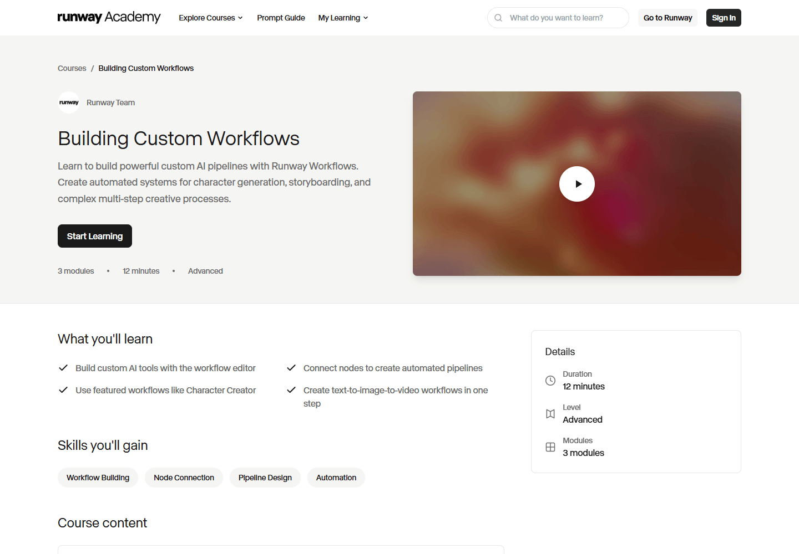

P25-runway-e1 · 用户自述
匿名A用Meta Glasses拍摄再做Gen-3视频转视频环境替换，每镜头约做4个版本挑选，仍有物体重叠；自述为旧无限计划用户。
2024-12-02至03；索引日期 · 观察：2026-09-10
2024历史流程；旧套餐成本不沿用，未播放视频验质。
Runway 将参考画面转为可供剪辑的动态镜头。用户往往多次生成后挑片，也会因运动控制和费用放弃。Miro客户案例包含团队判断、反复试作、3D后期和平台辅导，其成果不能视为普通新手仅凭生成即可达到的水平。
| 内容使用者 | 内容供给者 | 付款方 |
|---|---|---|
| 按具体镜头做视频试作、个人项目和职业制作的使用者。 | 提供示例、课程、作品和制作经验的作者；没有把公开作品等同普通用户收入。 | 有旧订阅、试验预算自述和企业客户；API买方规模未披露。 |
5名独立历史使用者；职业不由发片推定。 · 历史任务线索较充分，现版本结果仍待验证
| 观察点 | 群体占比 |
|---|---|
| 5个可区分用户点 | 未知 |
| 问题 | 具体材料 |
|---|---|
| 任务 | 完成镜头环境变化、人物运动或概念验证片段。 |
| 触发 | 已有参考图/视频，一个镜头难拍或想试新方向。 |
| 希望取得的结果 | 得到可放进剪辑和合成的镜头，并控制每段成片成本。 |
| 困难 | 少改提示可能导致整体运动变化。；生成片段需要挑选，失败消耗预算。 |
| 需要的内容 | 起始图、动作拆解、失败镜头、重试次数和实际采用片段。 |
| 替代方法 | After Effects手工动画、实拍或其他图生视频模型。 |
| 持续使用记录 | E称持续主要使用；A/B说明多轮迭代；D没有满意结果。均无近期连续续费记录。 |
| 回访假设 | 未完成的项目、已有提示方法和新的镜头会产生复用。 |
| 付费记录 | A旧套餐、D试验费用为自述；E收入主张未核验，不能当职业成功。 |
2个官方客户观察；Miro有具体项目，MIXI以合作公告为主。 · 官方客户线索，普通团队画像不足
| 观察点 | 群体占比 |
|---|---|
| 0个可区分用户点 | 未知 |
| 问题 | 具体材料 |
|---|---|
| 任务 | 完成特定活动视频、多市场版本和品牌视觉镜头。 |
| 触发 | 重复活动简报、时间限制及多版本交付。 |
| 希望取得的结果 | 在团队审稿和后期流程中得到可发布素材。 |
| 困难 | 品牌准确、逻辑连贯和版本要求超出单次生成。；团队学习与辅导投入不能忽略。 |
| 需要的内容 | 完整简报、改稿、工具分工、工时和已发布版本。 |
| 替代方法 | 实拍、图库、3D制作与混合生产。 |
| 持续使用记录 | Miro案例有重复简报语境；官方规划不算下一项目已采用或续约。 |
| 回访假设 | 周期性活动和经验积累可能带来再使用。 |
| 付费记录 | 客户关系有官方陈述；采购金额、续约和实际席位未知。 |
API购买角色，不能由网页创作用户代替。 · 候选画像，0个独立生产用户点
| 观察点 | 群体占比 |
|---|---|
| 0个可区分用户点 | 未知 |
| 问题 | 具体材料 |
|---|---|
| 任务 | 把视频/图像生成和处理嵌进下游服务。 |
| 触发 | 应用有重复媒体任务或需自动提交作业。 |
| 希望取得的结果 | 输出质量、等待与成本适合下游业务。 |
| 困难 | 有API不等于稳定完成目标业务。；失败重试与预算需要业务侧控制。 |
| 需要的内容 | 真实调用案例、输入约束、失败账目和下游验收。 |
| 替代方法 | 其他视频API、本地模型或人工制作流程。 |
| 持续使用记录 | 只有API供给文档，没有生产集成、跨期调用或留存。 |
| 回访假设 | 稳定生产调用可形成重复需求。 |
| 付费记录 | 按调用收费机制存在，买方付费量和续用未知。 |
| 产品提供 | 内容形态 | 如何发挥作用 | 观察结果 | 剩余工作 |
|---|---|---|---|---|
| 图生视频、视频转视频与运动提示。 | 输入图/视频、动作提示、短镜头。 | 把视觉和运动拆开，迭代后选片。 | A生成环境变体；C给出拆分输入的示例；结果只到候选镜头。 | 重叠、运动违背预期和片段稳定仍需修正。 |
镜头试作自述
| 产品提供 | 内容形态 | 如何发挥作用 | 观察结果 | 剩余工作 |
|---|---|---|---|---|
| 可供后期使用的镜头及教学/项目支持。 | 片段、项目素材和制作指南。 | 生成与剪辑、合成、3D和审稿组合。 | B最终还要AE修整；Miro在完整团队流程中完成项目；D的PoC失败。 | 普通新手成片率和净工时不明。 |
部分采用与官方客户成片
| 产品提供 | 内容形态 | 如何发挥作用 | 观察结果 | 剩余工作 |
|---|---|---|---|---|
| 模型API与规格对应计费。 | 程序调用与生成输出。 | 把请求封装为业务步骤。 | 确认可提供调用；没有已核验下游产品成功。 | 生产稳定性、集成维护成本和复购未知。 |
官方供给
匿名A用Meta Glasses拍摄再做Gen-3视频转视频环境替换，每镜头约做4个版本挑选，仍有物体重叠；自述为旧无限计划用户。
2024-12-02至03；索引日期 · 观察：2026-09-10
2024历史流程；旧套餐成本不沿用，未播放视频验质。
匿名B想让剪影自然活动替代After Effects手工变形，修改提示花掉大量额度，最后仅取得还要在AE合成中修整的片段。
2025-04左右；历史 · 观察：2026-09-10
失败与片段采用均为自述；没有真实账单或当前模型复测。
匿名C在同一讨论中把别人的要求拆成Gemini静态图和Runway运动提示，提供结果链接，并称此办法有好结果。
2025-04左右；历史 · 观察：2026-09-10
有独立回复和制作动作，未播放结果；不等于B原需求被解决。
匿名D为了概念验证项目花了约50美元，却自述没有得到一个满意视频。
2025；特定回复相对日期 · 观察：2026-09-10
历史预算自述；不推平台平均失败率。
匿名E称持续主要使用Runway图生视频，按镜头需要在Turbo和完整版间分工，并自述以此维生。
2025-04左右；历史 · 观察：2026-09-10
只采用持续流程线索；收入、客户、职业状态没有独立证明。
Miro案例描述为四个市场制作keynote视频，反复生成图像和镜头并配合3D后期、平台辅导；客户自述节省制作时间。
未标日期 · 观察：2026-09-10
正文访问、50%表述及既有正文审阅；精选营销个案，无完整工时和成本台账。
图生视频以输入图确定构图/对象，提示主要描述运动；输入图隐含运动可能和目标冲突，教程建议改图、重试或后期稳定。
未标日期 · 观察：2026-09-10
官方建议不保证某个输入一定成功；未运行。
API价格说明提供不同模型与输出规格的调用消费单位。
动态文档，访问2026-09-09 · 观察：2026-09-09
既有来源审阅；没有开发者实际集成、成功率与续费证据。
MIXI战略合作公告证明企业采用与合作关系的公开陈述。
2026-06-29 · 观察：2026-09-09
官方选择样本；不等同已验收所有合作项目。
Runway · 动态价格页，访问2026-09-09 · 查阅：2026-09-09
审阅既有baseline-segments.json及证据报告所载来源，原页上次读取为2026-09-09；未逐页复核。当前Standard/Pro/Max与60M+宣传口径；非MAU。
Runway · 动态文档，访问2026-09-09 · 查阅：2026-09-09
审阅既有baseline-segments.json及证据报告所载来源，原页上次读取为2026-09-09；未逐页复核。模型、输出规格和Recipe有不同消费单位。
Runway · 2026-06-29 · 查阅：2026-09-09
审阅既有baseline-segments.json及证据报告所载来源，原页上次读取为2026-09-09；未逐页复核。企业采用和日本扩展语境；不挪用MIXI旗下游戏用户。
Runway/Miro访谈 · 未标日期 · 查阅：2026-09-10
访问原页并读取正文/定位相关段落；任务、修改与重复简报线索；精选个案不能外推。
Runway · 未标日期 · 查阅：2026-09-09
审阅既有baseline-segments.json及证据报告所载来源，原页上次读取为2026-09-09；未逐页复核。订阅推荐佣金，非普通创作者默认收入。
Reddit公开讨论 · 2024-12-02至03；索引日期 · 查阅：2026-09-10
正文读取；作者多次回复只算1人；历史套餐和额度不当当前价格。
Reddit公开讨论 · 2025-04左右；历史 · 查阅：2026-09-10
正文定位读取；主帖用户与给出替代结果者分别匿名；视频链接未播放。
Reddit公开讨论 · 2025；特定回复相对日期 · 查阅：2026-09-10
正文定位读取；选取proof of concept失败回复，不采用标题定性。
Reddit公开讨论 · 2025-04左右；历史 · 查阅：2026-09-10
正文定位读取；选取长期使用i2v和模型分工回复；不存生活隐私和个人年龄。
Runway Academy · 未标日期 · 查阅：2026-09-10
正文读取与定位；图区分视觉与运动、输入隐含运动及剪辑稳定；未执行示例。
Runway客户故事解释采用原因，App封装工作流供成员使用，Projects保存团队项目。客户案例不可直接运行，App可能仅在工作区内可见，项目资产也未必公开。
以一个交付任务组织的采访和项目说明。
| 样例 | 可以取得什么 | 后续动作 | 条件与限制 |
|---|---|---|---|
| Miro 的Canvas26活动视频案例。 | 应用论证和部分过程，非完整可执行教程。 | 读者可判断任务相似性，并进入企业咨询；未联系。 | 官方精选，未交付完整项目文件或成本台账。 |
将已有流程呈现为简化操作界面。
| 样例 | 可以取得什么 | 后续动作 | 条件与限制 |
|---|---|---|---|
| Publishing Workflows as Apps 文档。 | workspace内的方法使用入口。 | 有权限者使用；维护者回源流程更新或取消发布。 | 未确认可导出完整源流程，更未确认全站公开模板交易。 |
围绕共同制作归集的会话、流程与资产。
| 样例 | 可以取得什么 | 后续动作 | 条件与限制 |
|---|---|---|---|
| Introduction to Projects。 | 团队内部生产上下文。 | 按权限共享或移出，继续项目；未实测。 | 不是公开内容样本，费用从workspace统一管理而非单独项目账单。 |
官方客户采访，涉及四城活动开场视频；是选择性成功案例，不代表普通自助用户。
| 材料部分 | 观察到什么 | 作用分析 |
|---|---|---|
| 任务约束 | 案例交代具体场地、本地化和非常规宽屏需求。 | 让读者理解为何通用素材不足；先判断需求相似性，不能只比较工具名。 |
| 制作方法 | 先试静态图，再多次生成视频，另叠加动效与3D品牌元素。 | 区分模型输出和最终成片，成品质量不能全部归因于一次生成。 |
| 支持条件 | 客户称得到Runway创意人员专门辅导。 | 厂商支持可能改变采用门槛，因此普通账号复制时不能默认拥有同等条件。 |
| 成效表述 | 页面列节省制作时间等指标，但无原始核算附件。 | 数字说明客户自述收益，缺少基准、工时与费用分母就无法做通用ROI模型。 |
没有这几项材料，不能得出每个团队都能同样省时，也不能据此估算普通作者接单利润。
| 可取得或继承 | 还需准备 | 不能直接迁移 |
|---|---|---|
| 客户案例能带走任务拆解思路；App文档说明如何提供受控入口；Projects支持成员间共享制作资料。 | 自己的合法可用素材、任务要求、相应workspace权限、额度及制作判断。 | 公开案例未给源工程；App可使用不等于能编辑内部流程；项目外部的人也不自动取得素材。三类引用不能合称一键复制。 |
Runway CPP提供工具及合作机会，Affiliate按新增付费订阅计佣，团队工作流支持内部复用。三者分别涉及作者关系、获客归因和流程维护；赠送工具权益不构成固定供稿约定。
CPP 提供Max计划、早期访问及合作机会，明确不要求特定时间或创作投入。
| 执行与分工 | 触发与节奏 | 运营作用（分析） | 失效条件 |
|---|---|---|---|
| 平台选择成员；成员自主探索。 | 申请后筛选；项目活动频率未公开。 | 合作重在关系和能力探索，不应预期自动取得稳定稿量。 | 入选不证明有付费项目，也没有公开持续交付率。 |
Affiliate 申请需要有效渠道链接，所有受众规模均可申请，并由团队审查。
| 执行与分工 | 触发与节奏 | 运营作用（分析） | 失效条件 |
|---|---|---|---|
| 作者展示既有渠道，平台决定是否接纳。 | 每次申请审查；没有公开通过时间承诺。 | 渠道内容及参与情况比一个抽象粉丝数更可检查。 | 可申请不等于获批；没有渠道带来有效制作的证据。 |
Affiliate 每个用代码购买的新订阅者对应15美元；合作先为期三个月。
| 执行与分工 | 触发与节奏 | 运营作用（分析） | 失效条件 |
|---|---|---|---|
| 平台提供归因与结算，作者自行安排发布。 | 页面称每月首日付款；继续合作取决于使用和经济条件。 | 将获客报酬与制作稿费分开，阶段性决定是否继续。 | 未承诺同一客户每次续订都分成；退款扣回细则未取得。 |
Workflow 可封装为App并选择锁定配置；更新需回到源流程。
| 执行与分工 | 触发与节奏 | 运营作用（分析） | 失效条件 |
|---|---|---|---|
| 流程作者负责方法，workspace使用者提供允许的输入。 | 首次发布、修改和取消发布时触发。 | 复杂能力可交给较少设置经验的人使用。 | 不是已确认的公开市场；封装不能保证不同素材运行成功。 |
Projects 汇集会话、流程与资产，项目内向成员共享，外部默认私有。
| 执行与分工 | 触发与节奏 | 运营作用（分析） | 失效条件 |
|---|---|---|---|
| 团队维护成员范围和素材；平台提供共享与项目费用记录。 | 生成、共享、移出或成员改变时触发。 | 续用围绕交付推进，未公开发帖也可能在持续工作。 | 无项目留存数据；管理员另有可见性，不是绝对隔离。 |
当前公开计划说明；没有申请、发布代码或查验结算。
规则确认审核、归因和付款；分析上还需排除退款及异常来源，详细处理规则未公开。
页面收入宣传不能代表典型作者，也没有代码成交后的留存或客户质量数据。
| 供给者回报 | 参与者回报 | 与付费的连接 |
|---|---|---|
| CPP 给访问及合作机会；Affiliate 活跃伙伴给计划资源，二者适用条件不同。 | 成员也可因自己的项目和同事需要维护流程，不必获得公开流量。 | 商业推荐报酬依据新增订阅，团队生成消费依据workspace；不要把两类收入相加为作者分成。 |
| 持续工作 | 尚未量化的成本 | 成立条件 |
|---|---|---|
| 维护作者关系、合作资格和归因，支持流程更新、成员权限与制作问题。 | 专业示例包含选片、后期和方法支持，相关人力成本未量化。 | 稳定工具、具备制作判断的作者，以及愿意维护团队方法的人。 |
Runway向个人、制作组织与开发者收费，公开作品展示用途，项目制作、修改和集成构成持续使用场景。消费者与企业收入需分别核对，影展规模不能代替商业数据。
| 付款方 | 收入方式 |
|---|---|
| 个人视频创作者、品牌和制作组织、API开发者；渠道推广作者与部分合作创作者是平台采购或奖励的接收方。 | 个人分档订阅与额度加购、企业合同、按模型和输出量计费的API；联盟按带来的新付费订阅者结佣。 |
当前价格页免费方案给125个一次性额度；Standard/Pro/Max月度标价为15/35/95美元，年度折算另列。高级档位增加额度、并发、项目和专业输出能力。付费动机可能是继续完成镜头或修改，不能把订阅包含的生成秒数当作最终成片时长。
开发者价格页按0.01美元购买一个 credit，不同模型按秒、图片或其他单位消耗；专业输出格式可另加费用。它同时提供围绕商品广告等任务的 Recipe 计费。推断：将多个制作步骤包装为任务，也可以成为收费对象，但实际可用率仍决定用户成本。
MIXI合作公告描述从既有创意运营扩展到体育、生活与娱乐；Miro客户访谈则呈现活动视频、特定场地镜头和不同投影尺寸。可确认这些组织用途存在，但客户成功故事经过挑选，不能把个案节省时间或合作方自身用户数外推为平台整体收益。
2026年9月11日联盟页列明：审核后先进行3个月试点，每带来一名用专属码购买付费计划的新订阅者得15美元，观众享25%折扣。持续收入指不断带来新订阅者，不能解读为同一人的每次续费都分佣；实际支付、退款调整与推广者净收益未取得。
9月11日官网当前为Standard/Pro/Max，月付15/35/95美元，年付折算12/28/76美元；月credits为625/2250/9500。Free125为一次性，Standard/Pro月额不结转；Max可结转一个月，加购额不失效。联盟计划公开每位新增付费订阅者奖励15美元，并提供25%折扣码。 未结算；官方单价和推广奖励不证明作者实际支出、结算收入或可持续盈利。
| 指标 | 披露值 | 期间与对象 | 解释 | 限制 |
|---|---|---|---|---|
| 创作者覆盖宣传口径 | 60M+ creators（超过6000万） | 价格页访问2026-09-09，未标统计窗口；Runway 官方对覆盖创作者的自述 | 提示较大的产品触达规模。 | 未定义注册、累计、活跃或付费口径；绝不能写成6000万MAU。 |
| 企业客户增长 | 过去12个月增长300% | 2026-06-29公告；日本扩张语境中的企业客户增长表述 | 说明官方重点叙述企业采用的扩展。 | 该段没有明确分母、绝对客户数或地域统计定义，不据此推算全球企业收入和客户总数。 |
| 营收、利润与付费人数 | 未公开核实 | 截至2026-09-09；Runway公司及各业务线 | 不以融资额或估值替代经营结果。 | 消费者、企业和API收入拆分没有在所核官方材料中公布。 |
Runway · 动态价格页，访问2026-09-09 · 查阅：2026-09-09
当前Standard/Pro/Max与60M+宣传口径；非MAU。
Runway · 动态文档，访问2026-09-09 · 查阅：2026-09-09
模型、输出规格和Recipe有不同消费单位。
Runway · 2026-06-29 · 查阅：2026-09-09
企业采用和日本扩展语境；不挪用MIXI旗下游戏用户。
Runway/Miro访谈 · 未标日期 · 查阅：2026-09-09
任务、修改与重复简报线索；精选个案不能外推。
Runway · 动态页面，2026-09-11复核 · 查阅：2026-09-11
新付费订阅者每名15美元；不推定续费分成。
Runway · 未标发布日期 · 查阅：2026-09-11
本次打开完整页面及年/月价格标签；未进入购买。 当前Standard/Pro/Max、Free一次性、credits有效期；非历史Unlimited。
Runway · 未标发布日期 · 查阅：2026-09-11
本次原页可读：申请审核、3个月试行、合作权益。 每个新增付费订阅者15美元、25%折扣码、活跃伙伴Max权益；非作者实际收入。
官方项目、Workflow/App 和 Academy 资料可核；用户标签仍停在使用者身份设置，未代填身份、未生成。

研究从节点、输入到可复用流程的教学组织方式。
用户工作区仍有首次身份设置；课程页面不能替代登录实操。
来源页面 ↗核对首次使用状态；不代填身份。
未进入工作区、未创建项目或提交生成。
已接收生成任务0次。仅使用既有免费资源；没有充值或公开发布。每平台最多 3 次提交，包含重试。
| 阶段 | 用户动作 | 可能遇到的障碍 |
|---|---|---|
| 发现与进入 | 由成片、幕后或具体短教程进入。 | 需要找到与自己的镜头任务相近的方法。 |
| 第一次做成 | 准备素材，使用流程或 App，交出符合要求的镜头。 | 复制不等于已经补齐输入和运行条件。 |
| 再次使用 | 继续项目修改、选片或补镜头。 | 这些行为可能不留下公共帖子。 |
| 贡献给别人 | 整理可公开的幕后、方法和作者合作内容。 | 客户素材、公开教学和项目协作有不同范围。 |
固定参数 App 适合换素材，完整工作流适合改过程。分享入口应说明接收者能看到和修改哪些部分；原档案保留了共享输入与输出的区别。
项目里持续修改和公开展示是两条路。保存输入、已选结果和修改过程，可能比新增作品互动更直接地帮助用户完成交付。
官方资源页连接 Academy、用例、Discord 答疑、直播、线下活动、作品展示和 CPP。它的专业社区不是单个站内内容流，而是围绕作品与职业成长的多种关系。
Workflow 文档已经给出分享链接、接收者登录查看、Make a copy 继续创作；共享的是输入资产，不含节点输出，企业有额外公开设置。另可封装为 App 固定部分参数，服务工作区复用。
Creative Partners Program 通过作品集与加入理由筛选，提供 Max、提前体验、合作与专属活动。当前页面明确没有固定时间投入要求，不能把它误写成月交稿合同或统一现金补贴。
对多元拾光则需要相反地把采购交付写清：目前要解决的是没有可用案例，若只给身份和资源，不能保证得到可验收的内容。
读取的 GEN:48 条款属于 2025 年一届，规定制作时间、影片长度、工具使用比例、技术说明及评审。2024 Hundred Film Fund 是历史启动公告，当前基金入口已转向 Studios。
这些资料能说明如何把资源支持换成创作与过程展示，不能证明今天仍开放相同申请，也不能把计划投入金额当实际拨款。
帮助文档区分一次性试用、订阅与增购，并公布 2026 年以 Max 替代 Unlimited 的迁移安排，不能沿用旧无限套餐。推荐奖励要求双方持续付费一段时间，明显区别于注册即赠。
官方退款说明指出，生成成功但用户不满意并不自动退资源。导演幕后案例也出现重试、改风格、外部修图和补镜头，证明精选成片背后存在人工生产工作。
链接分享和复制降低接手别人的方法的成本，但输入、输出、权限、依赖与隐私需要向使用者讲清。MakeNow 将来开发复制时，应先以真实交接任务判断最少需要带走什么。
现阶段一名合作作者、一个小项目、一份幕后说明和一次答疑，就能测出供给与需求是否匹配。把影展形式缩小为可完成的共创，不必同时仿建基金和作者平台。
Projects 文档区分项目外私密创作与项目内成员可见的结果，并可按项目查看资源使用。App 更新则需要返回源工作流修改，再更新 App。
Academy 按具体任务提供短教程；Studios 展示成片、幕后与合作制作，公开招募也列出制片、编剧、动画等不同角色。这些证据说明专业案例包含组织劳动，不代表平台实际人员规模或平均制作成本。
| 做法 | 依据 | 投入 | 调整条件 |
|---|---|---|---|
| 作者交同一素材的几种镜头方案和一次修改，运营整理可公开过程，产品验收采用结果。 | 可以判断用户想学习并自己做，还是只想购买成片。 | 报价包含试片、返工和资料整理；研发根据重复操作阻塞改 MakeNow。便宜算力不能替代这些劳动。 | 用户持续自己制作、复制确实缩短交接，再完善分享；只要成片则单独评估代制作服务。 |
| 做法 | 依据 | 投入 | 调整条件 |
|---|---|---|---|
| 先用一组案例和已有协作方式，记录交接与私密使用需求。 | 高质量供给需要创作与组织能力，平台功能不会自动提供导演和制片。 | 小项目的传播有限，所需组织和研发投入也较少。 | 稳定任务与合作作者已经存在，现有方式反复阻碍交付后，再扩展。 |
官方 · 访问 2026-09-08
当前权益和不强制时间投入
官方 · 未标更新日
学习、答疑与作者生态入口
官方 · 未标更新日
分享、复制及输入／输出限制
官方 · 所读为 2025-08-23 至 25 日届次
历史赛事，不代表当前招募
官方 · 2024-09-26
历史资金计划，不等于已拨付
官方 · 2026-09-08 重定向 Studios
现行开放状态未确认
官方 · 未标更新日
一次试用、订阅与增购
官方 · 含 2026 迁移安排
Max 与旧 Unlimited 区别
官方 · 未标更新日
奖励绑定持续付费
官方 · 未标更新日
质量不满意与生成错误的区别
官方 · 历史案例；未标绝对发布日期
精选个案中的重试与人工工作
官方 · 未标更新日
封装为 App 与固定参数，官方直接说明
官方 · 未标更新时间；访问 2026-09-09
私密创作、项目成员可见和资源使用
官方 · 未标更新时间；访问 2026-09-09
源工作流与 App 更新
官方 · 未标更新时间；访问 2026-09-09
具体工作流教程与难度
官方 · 未标更新时间；访问 2026-09-09
作品、幕后和制作角色
同一项目跨日期发布并解释制作过程；另有本人确认的修改、重试失败与疑虑缓解。 40集完成属于自述；原失败任务是否完成、费用与社区带来的收入未知。
发布第1集，称40集已制作完成，计划连续发布；在回复中确认声音由两名团队成员表演。这里的40集完成仍是本人自述。
同一账号发布第5集，说明表演输入Runway的Act及后续Act-2，并愿意答复制作问题、询问能否分享幕后过程。
同一账号在第14集帖子中再次说明Runway用于表演，并继续寻找观众。本次打开时，跨贴的视频入口显示已被版主移除，作者说明仍可读。
制作人公开幕后说明及可读视频转录展示起始图、表演声音、替换声音和最终输出；另一篇本人说明列出Midjourney、Runway和Hailuo的组合。未播放视频验质。
用户公开求助。回复者建议咨询站内虚拟客服和社区Discord；本人确认已按提示修改、再次失败，并因担心账号影响暂时停止尝试。
本人补充操作：向虚拟客服提供完整提示和错误，随后修改文字并重做结束图，重试仍失败。并向另一位询问者说明客服入口。
本人表示多数提示并未被拒绝，检查后账号仍正常；又说自己对连续拒绝导致封号的担心有所缓解。这没有确认原视频生成成功。
商业化判断：既有订阅及API价格资料说明收费对象，本次没有补充收入数据。独立团队持续使用与发帖不证明社区促成购买；失败帖对套餐的自述也不是账单。社区对获客、续费或收入的增量贡献仍无可计量证据。
具有同一独立团队跨帖发布与表演方法链，以及普通用户失败后续；可用于说明AI视频从真人表演到连续作品的具体分工。专业团队和官方合作计划不能代替普通用户总体，40集已完成仍为作者自述。
Finch为两人独立团队且双方有影视背景，属于专业创作者；另有普通用户在Runway调用Kling模型的具体失败。联盟计划申请者属于获客合作群体，不能计作普通自然用户。
可观察同一Finch项目的第1、5、14集公开帖子，以及作者解释真人配音、Act 1到Act 2的驱动处理；全片工作流同时涉及Midjourney、Hailuo和DaVinci。公开连续发布不等于40集均已逐集验看。
作者在社区答复方法并附教程链接，说明作品可转为方法交流。另一用户按Runway助手建议改提示/尾帧后仍失败，后续账户正常仅消除封禁担忧，不是原任务已解决。
9月11日官网当前为Standard/Pro/Max，月付15/35/95美元，年付折算12/28/76美元；月credits为625/2250/9500。Free125为一次性，Standard/Pro月额不结转；Max可结转一个月，加购额不失效。联盟计划公开每位新增付费订阅者奖励15美元，并提供25%折扣码。
Runway承担镜头生成与表演迁移；创作者承担剧本、表演/录音、驱动素材、挑选与剪辑。官方指南要求从简单提示迭代并区分输入图像和动作描述；不保证首轮成功。
Finch实际采用多工具分工而非互斥选一个平台。失败帖中的Kling来自Runway入口，因此故障应区分平台界面、底层模型与审核；不能归成两项独立负面样本。
任务：制作并持续发布科幻竖屏短剧，同时找到观众。
困难：需要跨集表演一致性、控制角色表达，且成员不能持续同时投入。
结果：同项目不同集数公开帖子及方法答复已读取；40集完成属于作者声明，工具责任可分解。
尚缺：未核验全40集、付费订阅、观众留存、总制作成本及读者复现。
任务：以汽车场景首尾帧生成视频。
困难：请求被判不安全，用户不能定位原因。
结果：已找到失败后续：账户仍能使用；未找到原片段成功，不能标为解决。
尚缺：具体拦截归因、原任务成功与积分返还均未独立核验。
作者完成声明与逐集交付证据强度不同。
完整播放列表及抽样观看记录，保留角色、音画与连续性标准。
能完成一季不能证明可持续生产。
同团队后续项目日期、脱敏月账单/工时及未采用镜头数量。
已有后续只确认账户状态，尚无内容成功。
原作者同任务成功片段或正式支持结论；不需要联系作者或使用凭据。
本次打开完整页面及年/月价格标签；未进入购买。
当前Standard/Pro/Max、Free一次性、credits有效期；非历史Unlimited。
本次打开原指南。
图像与动作描述分工、逐步迭代；不是成功率实测。
本次重读主帖和作者方法/背景/声音回复；未播放整季。
同一团队作品发布、表演迁移方法、影视经验和外部后期。
本次重读原帖和作者答复。
同项目第二日期发布及真人表演方法。
本次原页及作者回复可读，页面含移除提示；移除原因不推断。
同项目后续集数与寻找观众自述；非第40集验收。
本次重读主帖/改图/继续失败/账户正常后续；精确日期未显示。
普通任务失败、尝试修正和未恢复原任务的边界。
本次原页可读：申请审核、3个月试行、合作权益。
每个新增付费订阅者15美元、25%折扣码、活跃伙伴Max权益；非作者实际收入。
本次公开正文和作者第2集链接可读；未登录、未采集用户凭据。
同作者说明Midjourney、Runway与Hailuo多工具分工。
连续作品是否来自同作者，如何完成？：Finch第1/5/14集原页；第1集作者的配音/表演/影视背景答复；同作者LinkedIn整片介绍；跨日期作品帖及方法已核对；专业能力和多工具必须保留，全40集和观众结果仍未核验。
普通用户失败之后发生了什么？：Runway内Kling失败原帖和原作者多条后续；定位改提示、改尾帧后仍失败；后来账户正常不等于原请求成功，不重复记入Kling独立案例数量。
现行收费与合作机制？：Runway pricing月/年标签与FAQ；Runway Academy提示指南；官方Affiliate Program；当前为Max等套餐；公开推广奖励已明确固定额，旧Unlimited权益与官方精选客户节省比例不混入当前普通用户结论。